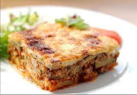

musaka

Moussaka is a dish I did not appreciate until I was older, I've mentioned before why was that.
The Egyptian version of Moussaka usually does not have that bechamel layer.
This is what we call in Egypt Moussaka bel bechamel.
Ingredients
- round meat: Use beef, lamb or a mixture. In my home, my mom always used beef.
- Onion: for the base flavor and sometimes people also use garlic alone or with the onion.
- Olive oil: for the main fat for browning.
- Spices: cinnamon, ginger and allspice are the main flavor boosters here, but you can use other spices as well.
Bay leaves, cardamom, cloves, oregano, Italian seasoning,... etc.
- Broth: as a cooking liquid.
- Tomato and tomato paste: for color, taste and texture.
- Butter and olive oil: combined for cooking the flour.
- Salt and pepper: you can use white pepper but I always like black pepper more.
- Flour: of course for making the sauce and thickening it.
- Parmesan cheese: for extra flavor, you can use Romano as well. I've seen people even use feta.
- Egg: for richness and color.
- Broth/Milk: use any or both. I've used a mixture of 2/3 milk and 1/3 homemade beef broth.
steps
- Add olive oil to a pan over high heat and sautee onion for a couple of minutes.
- Add the ground meat, break it apart and brown until no longer pink.
- Add the spices and mix well. Pour in the broth and the tomato sauce and mix.
- Add the diced tomato and lower the heat and simmer for about 10-15 minutes. Set aside.
- Make the Bechamel sauce by first melting butter with oil in a skillet large enough to hold the sauce.
- Add the flour and cook for a couple of minutes, stirring occasionally.
- Now slowly pour the milk or broth and whisking continuously until sauce thickens.
Season with salt and pepper then set aside to cool down for 5 minutes so we can add the egg without cooking it right away.
- Crack an egg and add the Parmesan cheese. Stir well.
- Now it is time to layer the dish. In a safe oven dish arrange half of the eggplant at the bottom of your dish.
- Top that with the meat mixture and add the jalapeño pepper if using.
- Arrange the remaining eggplant slices.
- Pour bechamel sauce over, tilt the pan or level the top with a spatula.
Bake in the oven until the bechamel layer is lightly browned and the dish is bubbly.
for other balkan Recipes you can cheack the links below